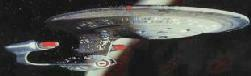

Flotta Stellare - U.S.S. Enterprise NCC-1701-D |
|
|||
|  |
Classe: Galaxy.
Classificazione: nave da esplorazione.
Matricola Registro Flotta Stellare: NCC-1701-D.
Missione: esplorazione, ricerca scientifica, difesa.
Cantieri di costruzione:
Utopia Planitia,
Marte.
Varata il 4 ottobre 2363.
Nave ammiraglia della Flotta Stellare (The
Icarus Factor).
Dimensioni e carico
Dimensioni: 467 metri di larghezza, 137 metri di altezza 642 metri di lunghezza.
Dimensioni della sezione motori: 259 metri di larghezza, 126 metri di altezza,
360 metri di lunghezza.
Dislocamento: 4.960.000 tonnellate.
Superficie interna: 800.000 m².
Ponti: 42.
Propulsione
Velocità di crociera warp 6, velocità massima warp 9,6 (per un massimo di dodici
ore), velocità di emergenza warp 9,8, danneggiamento dei motori a warp 9,9.
Reattore primario materia/antimateria controllato a dilitio. Forza massima campo
warp superiore ai 1.650 cochrane.
Efficienza massima bobine motori warp: superiore al 88% a warp 7,0; efficienza
minima: 52% a warp 9,1.
La geometria del campo warp include una compressione di 55° sull'asse Z sul lobo
frontale del campo warp per una migliore efficienza.
Propulsione secondaria ad impulso capace di sostenere una velocità massima di
0,92c fornita da almeno due motori a fusione modello YPS 8063.
Autonomia e strumentazione
Possibilità di operare senza rifornimenti per lunghi periodi: 7 anni standard in
modalità esplorativa a warp 6. Possibilità di eseguire missioni in spazio
profondo come rilievi cartografici, primi contatti e studi biologici.
Spazio disponibile per strumentazioni particolari: area abitabile comprendente
800.000 m² di superficie per apparecchiature e personale.
Analizzatori su tutto lo spettro elettromagnetico, ottico, su flussi
subspaziali, gravimetrici e capacità di analisi a livello quark.
Ambiente e equipaggio
Sistemi ambientali conformi alle direttive SFRA (Starfleet Regulatory Agency)
102.19 per personale che vive in ambienti compatibili alla classe M. Tutti i
sistemi di supporto vitale hanno una tripla ridondanza. Tutti i sistemi di
supporto vitale sono sostituibili in una qualsiasi base stellare per permettere
al veicolo di adattarsi ad condizioni ambientali di classe H, K o L.
Supporto di condizioni ambientali di classe M in tutti gli alloggi.
Disponibilità di un 10% di alloggi con ambienti di classe H, K e L. Ulteriore 2%
di alloggi adattabile ad ambienti di classe N e N(2).
Equipaggio di 760 effettivi più 252 persone non-Starfleet. Possibilità di
ospitare fino a 5000 persone non facenti parte dell'equipaggio.
Equipaggiamento medico: 50 posti letto in infermeria.
6 teletrasportatori più 22 di emergenza e 8 cargo.
Tutto il volume abitabile è protetto da radiazioni elettromagnetiche e nucleari
secondo lo standard SFRA (Starfleet Regulatory Agency) 347.3(a). Differenziale
del flusso subspaziale mantenuto entro gli 0,02 millicochrane.
Tattico
Scudi difensivi tali da permettere una dissipazione primaria di oltre 730.000 kW.
Tutti gli scudi tattici sono pienamente ridondanti con sistemi ausiliari che
consentono il 65% dell'efficienza nominale.
Set completo di phaser tipo X con
una potenza massima di 5,1 MW; due tubi di lancio
siluri.
Possibilità di separarsi in due astronavi autonome indipendenti.
Varie
Tutte le finestre sono in alluminio trasparente.
I sensori non sono in grado di rilevare le distorsioni di flusso (Emergence).
Disposizione dei servizi di bordo - Sezione a disco
Ponte 1: plancia, ufficio del Capitano, sala riunioni;
Ponte 3: sala da pranzo (Violations),
alloggi degli ospiti (The Outcast);
Ponte 4: teletrasporto
merci, stiva, hangar navette principale, alloggio di
Ro Laren (sezione 8) (Preemprive
Strike);
Ponte 5: alloggi degli ospiti, nuclei principali del computer;
Ponte 6: impianto di riciclaggio e rigenerazione dell'acqua potabile,
teletrasporto 1, 2, 3
(stanza 2054) (Where No One Has Gone Before)
e 4, supporto vitale, alloggi degli ospiti, nuclei principali del computer;
Ponte 7: nuclei principali del computer, alloggi ufficiali (The
Outrageous Okona), alloggio di Worf
(sezione 25-B) (Rightful Heir);
Ponte 8: nuclei principali del computer, alloggi ufficiali (The
Outrageous Okona), alloggio di Jean-Luc
Picard (Gambit - Part II), alloggio di
William Riker (stanza 0912) (The
Best of Both Worlds - Part I, Chain of
Command - Part II), alloggio di Deanna
Troi (stanza 0910) (Violations,
The Price), ufficio di Deanna Troi (stanza
3472) (The Icarus Factor,
The Price) aree multiuso che possono essere
attrezzate in base alle esigenze (Liaisons);
Ponte 9: impianto di trattamento dei rifiuti solidi, supporto vitale, nuclei
principali del computer, alloggio di Picard
(stanza 3601) (Allegiance), alloggio di
Troi (stanza 0910) (Clues),
alloggi degli ufficiali (Q Who?), alloggi
degli ospiti (Evolution);
Ponte 10: Ten Forward, stoccaggio antimateria,
motori a impulso della sezione a disco, generatori dei
deflettori, nuclei principali del
computer, laboratorio scientifico (stanza 5013) (Pen
Pals);
Ponte 11: generatore dei campi di forza di integrità strutturale (SIF),
generatore dell'IDS,
holodeck 1, 2, 3 e 4
(stanza 2917, The Icarus Factor), nuclei
principali del computer;
Ponte 12: sezione medica (sinistra: terapia intensiva, ufficio dell'Ufficiale
Medico, laboratorio, nursery; dritta: sale operatorie, fisioterapia, nursery,
terapia a gravità zero, laboratorio dentistico, unità di isolamento per rischio
biologico), holodeck, nuclei
principali del computer, teletrasporto (The
Survivors), alloggio di Data (stanza
3053) (A Matter of Time), alloggio di
Geordi La Forge (Interface),
cartografia stellare (Liaisons), laboratori
di ricerca biologica e astrofisica (Liaisons), palestra (The Icarus Factor);
Ponte 13: impianto di riciclaggio e rigenerazione dell'acqua potabile, impianto
trattamento rifiuti solidi, supporto vitale, nuclei principali del computer;
Ponte 14: nuclei principali del computer, sala conferenze (The
Outrageous Okona), nido d'infanzia (Rascals);
Disposizione dei servizi di bordo - Sezione motori
Ponte 8: ponte di battaglia;
Ponte 11: supporto vitale;
Ponte 13: hangar navette 2 e 3;
Ponte 14: teletrasporto
5 e 6;
Ponte 17: alloggio di Data (Silicon Avatar),
giardino botanico (sezione 20-Alfa) (Genesis);
Ponte 18: stiva di carico 4 (Power Play),
teletrasporto merci (Power
Play);
Ponte 19: alloggi di lusso per ammiragli e ospiti importanti (gli alloggi hanno
le targhette identificative rosa anziché marroni) (The
Dauphin);
Ponte 21: supporto vitale;
Ponte 22: sala teletrasporto (A Matter of Honor);
Ponte 23: motori a impulso principali;
Ponte 24: impianto di riciclaggio e rigenerazione dell'acqua potabile, supporto
vitale;
Ponte 25: tubi lanciasiluri di
prua, magazzino sonde, portello di attracco numero 5 a sinistra (11001001);
Ponte 30: iniettore della materia, nucleo secondario del computer;
Ponte 31: generatori dei deflettori, nucleo secondario del computer;
Ponte 32: generatori dei campi di forza di integrità strutturale (SIF), nucleo
secondario del computer;
Ponte 33: generatore dell'IDS,
holodeck, nucleo secondario del
computer, celle di detenzione (Déjà Q);
Ponte 34: impianto di trattamento dei rifiuti solidi,
deflettore principale, supporto vitale,
nucleo secondario del computer;
Ponte 35: tubi lanciasiluri di
poppa, nucleo secondario del computer;
Ponte 36: sala macchine, camera di reazione materia/antimateria, nucleo
secondario del computer, sala armamenti (11001001),
laboratorio in cui Data mette a punto Lal (The
Offspring), vengono studiati Locutus (The
Best of Both Worlds) e Hugh (I, Borg) e
Geordi attacca la testa a Data (Time's Arrow);
Ponte 37: nucleo secondario del computer;
Ponte 38: teletrasporto
merci, stiva;
Ponte 39: teletrasporto
merci, stiva;
Ponte 41: stoccaggio antimateria;
Ponte 42: iniettore dell'antimateria, stoccaggio antimateria, generatore di
antimateria.
|
||||||||||||||||
Questo è il piano di evacuazione di emergenza dell'Enterprise nel caso
in cui si trovi attraccata ad una stazione spaziale:
Ponti da 1 a 4 ai trasportatori cargo (riprogrammati) (11001101)
Ponti da 5 a 10 ai trasportatori 1, 2, 3 e 4
Ponti da 11 a 16 ai trasportatori 5, 6, 7, 8, 9 e 10 (11001101)
Ponti da 17 a 28 ai trasportatori 11, 12, 13 e 14
Ponti da 29 a 42 ai trasportatori 15, 16, 17, 18, 19 e 20
Procedura di autodistruzione tratta da
11001001, notare che mentre l'autodistruzione può essere attivata anche
nella sezione tecnica, può essere disattivata solamente dal ponte di comando.
Picard e Riker appoggiano le mani sul terminale per il riconoscimento delle
impronte digitali.
Computer: Riconosciuto. Picard, Jean-Luc, Capitano. Riconosciuto. Riker,
William T., Comandante.
Picard: Attivare la sequenza di autodistruzione.
Computer: Il primo ufficiale è dello stesso parere?
Riker: Sì, attivare la sequenza di autodistruzione ora.
Computer: L'autodistruzione avverrà tra quattro minuti e cinquantanove
secondi.
Procedura di interruzione della sequenza di autodistruzione, sempre da
11001001
Picard [con le mani appoggiate alla console]: Cancellare la sequenza di
autodistruzione.
Computer: Il primo ufficiale è dello stesso parere?
Riker [con le mani appoggiate alla console]: Affermativo.
Computer: Autodistruzione cancellata.